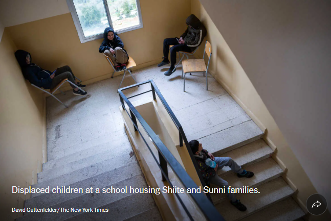

LIVE 13m ago
Trump Berates Allies While Signaling He Will Wind Down the War
President Trump sharply criticized long-standing allies during a recent press briefing,
raising concerns among international leaders about the future of global cooperation.
He suggested that the United States might reduce its involvement in ongoing conflicts,
signaling a potential shift in foreign policy that could have wide-ranging consequences.
Analysts believe that such statements could weaken diplomatic ties and create uncertainty
in global markets. Meanwhile, officials from NATO countries have responded cautiously,
emphasizing the importance of unity and collective defense strategies in maintaining peace.
See more updates
Israel’s Message to Southern Lebanon: Shiites Must Go
Israel has issued sweeping evacuation warnings to residents in southern Lebanon,
urging them to leave areas believed to be under threat. The announcement has sparked
widespread concern among humanitarian organizations, who fear displacement of thousands
of civilians.
Local authorities and international observers are closely monitoring the situation,
as tensions continue to rise in the region. Aid agencies have begun preparing for
emergency response operations, including shelter, food, and medical support.
6 MIN READ

Displaced children gather at a temporary school shelter, where both Shiite and Sunni
families are seeking safety. Volunteers are working around the clock to provide basic
necessities, education, and emotional support to those affected by the crisis.